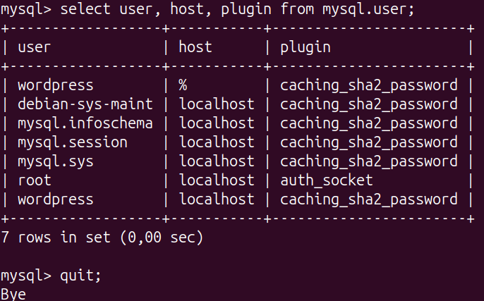
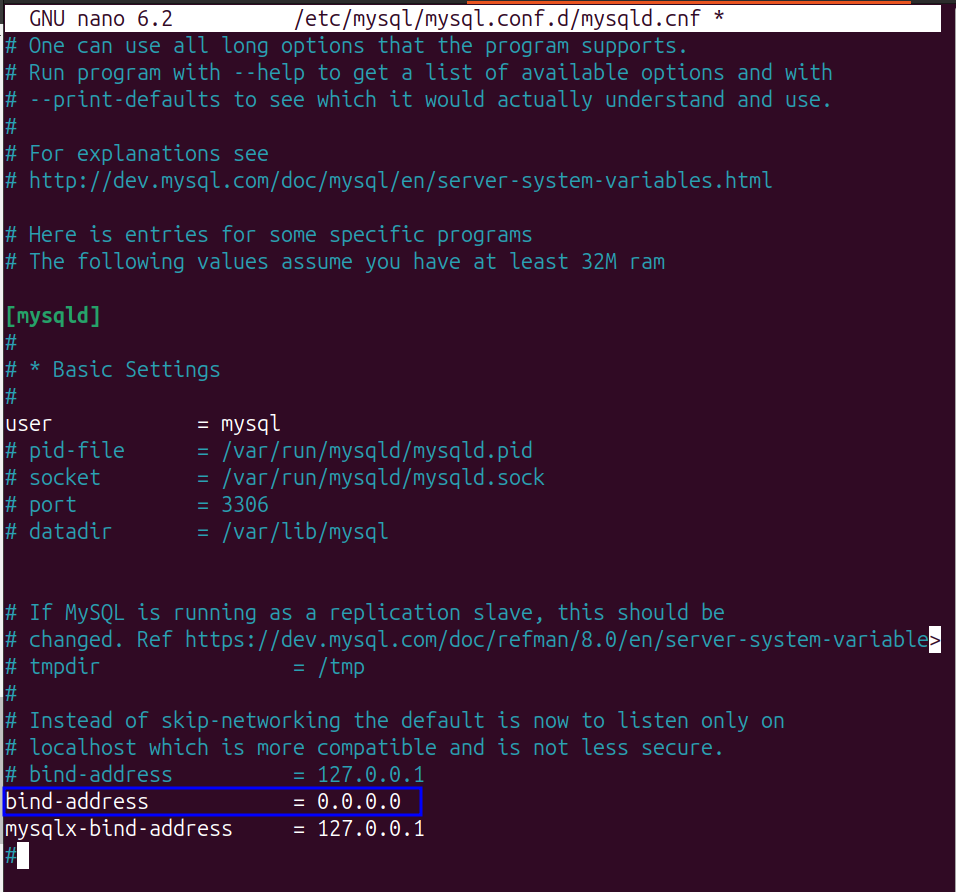

PHP Práctica 4: Instalación y Configuración de WordPress¶
1. Descripción General¶
En esta práctica, instalaremos WordPress en un servidor Apache2 y configuraremos una base de datos MySQL. Implementaremos WordPress en una arquitectura LAMP (Linux, Apache, MySQL, PHP) de dos niveles.
Objetivos
- Instalar PHP y Apache.
- Instalar WordPress.
- Configurar Apache para WordPress.
- Configurar la base de datos.
- Implementar la aplicación en una arquitectura de 2 niveles.
2. Instalación de Dependencias¶
Actualiza e instala los paquetes necesarios:
sudo apt update
sudo apt install apache2 ghostscript libapache2-mod-php php php-bcmath php-curl php-imagick php-intl php-json php-mbstring php-mysql php-xml php-zip
3. Instalación de WordPress¶
Descarga WordPress en el servidor:
sudo mkdir -p /srv/www
sudo chown www-data: /srv/www
curl https://wordpress.org/latest.tar.gz | sudo -u www-data tar zx -C /srv/www
 Figura.1:Para la instalación de Wordpress lanzamos el script de instalación.
Script Wordpress
Figura.1:Para la instalación de Wordpress lanzamos el script de instalación.
Script Wordpress
4. Configuración de Apache para WordPress¶
Crea y habilita el sitio para WordPress:
sudo nano /etc/apache2/sites-available/wordpress.conf
Añade el siguiente contenido:
<VirtualHost *:80>
DocumentRoot /srv/www/wordpress
<Directory /srv/www/wordpress>
Options FollowSymLinks
AllowOverride Limit Options FileInfo
DirectoryIndex index.php
Require all granted
</Directory>
<Directory /srv/www/wordpress/wp-content>
Options FollowSymLinks
Require all granted
</Directory>
</VirtualHost>
 Figura.2:Crear fichero wordpress.conf
Habilita el sitio y módulos de Apache:
Figura.2:Crear fichero wordpress.conf
Habilita el sitio y módulos de Apache:
sudo a2ensite wordpress
sudo a2enmod rewrite
sudo a2dissite 000-default
sudo service apache2 reload
5. Configuración de la Base de Datos¶
Crea la base de datos y el usuario para WordPress en MySQL:
NOTA
- Esto lo hacemos en la Maquina Virtual donde solo tenemos instalado MySQL.
sudo mysql -u root
CREATE DATABASE wordpress;
CREATE USER wordpress@localhost IDENTIFIED BY 'tu-contraseña';
GRANT ALL PRIVILEGES ON wordpress.* TO wordpress@localhost;
FLUSH PRIVILEGES;
quit;
 Figura.3:Crear usuario wordpres en la base de datos.
Figura.3:Crear usuario wordpres en la base de datos.
 Figura.4:Crear usuario wordpres en acces remot en la base de datos.
 Figura.5:Habilitamos el acceso remoto en el fichero de conf de mysql.
6. Conexión de WordPress con la Base de Datos¶
Configura el archivo wp-config.php con los detalles de la base de datos:
sudo -u www-data cp /srv/www/wordpress/wp-config-sample.php /srv/www/wordpress/wp-config.php
sudo -u www-data sed -i 's/database_name_here/wordpress/' /srv/www/wordpress/wp-config.php
sudo -u www-data sed -i 's/username_here/wordpress/' /srv/www/wordpress/wp-config.php
sudo -u www-data sed -i 's/password_here/tu-contraseña/' /srv/www/wordpress/wp-config.php
Finalmente, en una sesión de terminal abre el archivo de configuración en nano:
sudo -u www-data nano /srv/www/wordpress/wp-config.php
 Figura.6:Modificamos el fichero de
Figura.6:Modificamos el fichero de wp-config.php.
7. Configuración Final de WordPress¶
Accede a http://localhost y completa la instalación en el navegador.
 Figura.7:Acceder a Wordpress.
Figura.7:Acceder a Wordpress.
8. Publica tu Primer Post¶
Borra la publicación "¡Hola Mundo!" y crea una nueva en el panel de WordPress.
 Figura.8:Pagina publicada.
Figura.8:Pagina publicada.